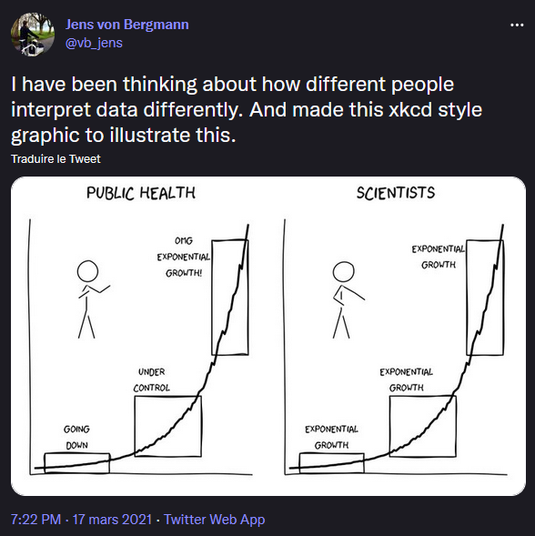

Les approches en systèmes complexes
L’objectif est de présenter ici les approches en systèmes complexes et en quoi les caractéristiques de ces systèmes font qu’elles semblent tout particulièrement pertinentes pour la psychologie. Il s’agit ici de synthétiser ce que j’ai pu en comprendre, en ne perdant pas de vue une humilité nécessaire quant à ma capacité limitée de compréhension et de synthèse de “ces complexités”. Cette précaution s’appliquera également aux trois prochaines parties à venir qui tenteront d’illustrer leur développement en psychologie.
Quelles origines des systèmes complexes
Si l’on s’intéresse aux approches en systèmes complexes, il apparaît pertinent de s’interroger sur son histoire pour mieux en dessiner les contours et comprendre son intérêt pour la psychologie en général et la psychologie clinique/psychopathologie en particulier. Dans son ouvrage Histoire et sociologie des sciences de la complexité, @livigniHistoireSociologieSciences2021, présente différentes approches de la complexité1 dont deux courants fondateurs importants sont apparus dans les années 1960-1970.
Les approches cybernétique et systémique, probablement les plus connues en sciences humaines et sociales. La cybernétique est décrite comme “La science des systèmes à circuit fermé dont l’action produit un changement dans l’environnement qui à son tour, rétroagit sur le système par le biais d’un feedback” et pour la systémique “une approche holiste (le tout est plus que la somme de ses parties) [abordant] mathématiquement les systèmes naturels et humains, sans les considérer comme à l’équilibre mais comme ouvert”.
Les systèmes dynamiques du champ des mathématiques et dont un exemple le plus connu est la théorie du chaos “il s’agit d’un ensemble intégré composé d’un grand nombre d’éléments en interaction, résultat de processus d’évolution et doués de propriétés émergentes au sens où le niveau microscopique engendre une organisation macroscopique qui n’est pas prévisible à partir de ces constituants”.
Toutefois, comme l’illustre les différentes fondations disciplinaires des sciences de la complexité [@hasselmanComplexSystemsApproach2022] et comme le rappelle le rapport de la Netherlands Organisation for Scientific Research qui s’intitule Grip on complexity. How manageable are complex systems? Directions for future complexity research [@henribalGripComplexityHow2014], une certaine confusion existe sur ce que l’on entend par science de la complexité.
“Complexity scientists use a range of methodologies to study a broad array of problems across the sciences. There is currently a vast and often confusing instrumentation for complexity scientists.
It includes mathematical theories of dynamical systems, bifurcations, chaotic attractors, Prigogine’s dissipative systems, graph theory and work by Barabási and others on the theories of networks, control and systems.
There is statistical physics. There are computer science constructs such as cybernetics, cellular automata, and agent-based models.
There are discipline-originated theories such as genetic algorithms, Lotka-Volterra predator-prey models, and May’s work on mathematical ecology.
How does the complexity researcher resolve this confusion? We need to work on developing, testing and validating fundamental theories and methods.
Which ones have universal applicability to complex systems? What analytical and computational tools belong in the standard toolbox of a complexity scientist? How do we begin to model a new complex system? What techniques of data analysis are available?”
Extrait de @henribalGripComplexityHow2014
Cette confusion étant en regard d’un nombre d’approches variées tant du point disciplinaire, théorique et méthodologique, essayons de synthétiser certains aspects des systèmes complexes qui semblent intéressants pour la psychologie.
Une caractérisation plus exhaustive des systèmes complexes
Mais en réalité, il est possible de caractériser avec plus de précisions encore les systèmes complexes. C’est notamment le travail qui a été réalisé par @boehnertVisualRepresentationComplexity2018 qui a permis de recenser et de représenter visuellement 16 propriétés des systèmes complexes, dont nous proposons une traduction ci-après.
- Feedback (rétroaction) : Lorsqu’un résultat ou une sortie d’un processus influence l’entrée directement ou indirectement. Ceux-ci peuvent accélérer ou supprimer le changement.
- Émergence : Des propriétés nouvelles et inattendues de niveau supérieur peuvent résulter de l’interaction de composants. Ces propriétés sont dites émergentes si elles ne peuvent pas être facilement décrites, expliquées ou prédites à partir des propriétés des composants de niveau inférieur.
- Auto-organisation : Des régularités ou des modèles de niveau supérieur peuvent naître de l’interaction locale de composants autonomes de niveau inférieur.
- Leviers et pivots : Certains éléments d’un système peuvent avoir une influence disproportionnée en raison de la structure de leurs connexions. Le comportement de ces éléments peut contribuer à mobiliser le changement, mais il peut également rendre le système vulnérable aux perturbations.
- Non-linéarité : Un système est non linéaire lorsque l’effet des entrées sur les résultats n’est pas proportionnel. Le comportement d’un système peut présenter des changements exponentiels ou des changements de direction (c’est-à-dire que des augmentations de certaines mesures deviennent des diminutions), malgré des changements faibles ou constants des entrées.
- Domaines de stabilité : Les systèmes complexes peuvent avoir plusieurs états stables qui peuvent changer en fonction de l’évolution du contexte. Les systèmes gravitent vers de tels états et y restent à moins d’être fortement perturbés. Si le changement dans un système dépasse un seuil, il peut glisser rapidement vers un autre état stable, rendant le changement très difficile à inverser4.
- Adaptation : Les composants ou les acteurs du système sont capables d’apprendre ou d’évoluer, en modifiant le comportement du système en réponse aux interventions au fur et à mesure qu’elles sont appliquées. Par exemple, dans les systèmes sociaux, les gens peuvent communiquer, interpréter et se comporter de manière stratégique pour anticiper les situations futures. Dans les systèmes biologiques, les espèces évolueront en réponse au changement.
- Dépendance de la trajectoire : Les états, actions ou décisions actuels et futurs dépendent de la séquence d’états, d’actions ou de décisions qui les ont précédés, c’est-à-dire de leur trajectoire (typiquement temporelle).
- Points de basculement : Le point au-delà duquel les devenirs du système changent radicalement. Le changement peut se faire lentement au départ, puis s’accélérer soudainement. Un seuil est le point au-delà duquel le comportement du système change soudainement.
- Changement au cours du temps : Les systèmes complexes se développent inévitablement et modifient leur comportement au cours du temps. Cela est dû à leur ouverture et à l’adaptation de leurs composants, mais aussi au fait que ces systèmes sont généralement en déséquilibre et évoluent en permanence.
- Système ouvert : Un système ouvert est un système qui a des interactions externes. Celles-ci peuvent prendre la forme de transferts d’informations, d’énergie ou de matériaux à l’intérieur ou en dehors des limites du système. Dans les sciences sociales, un système ouvert est un processus qui échange des matériaux, de l’énergie, des personnes, des capitaux et des informations avec son environnement.
- Imprévisibilité : Un système complexe est fondamentalement imprévisible. Le nombre et l’interaction des entrées, des causes, des mécanismes et des rétroactions signifient qu’il est impossible de faire des prévisions avec précision. Le bruit aléatoire peut avoir un effet important. Les systèmes complexes sont fondamentalement non connaissables à n’importe quel moment du temps ; c’est-à-dire qu’il est impossible de rassembler, de stocker et d’utiliser toutes les informations sur l’état d’un système complexe.
- Inconnus : En raison de leur structure causale complexe et de leur ouverture, de nombreux facteurs dont nous n’avons pas connaissance influencent (ou peuvent influencer) un système. L’existence inévitable de ces inconnues signifie que nous observons souvent des effets indirects inattendus de nos interventions.
- Contrôle distribué : Le contrôle d’un système est distribué entre de nombreux acteurs. Aucun acteur ne dispose d’un contrôle total. Chaque acteur ne peut avoir accès qu’à des informations locales.
- Systèmes imbriqués/emboîtés : Les systèmes complexes sont souvent des hiérarchies imbriquées/emboîtées de systèmes complexes (appelés “systèmes de systèmes”).
- Échelles et niveaux multiples : Les acteurs et les interactions dans les systèmes complexes peuvent opérer à travers plusieurs échelles et niveaux. Pour cette raison, les systèmes doivent être étudiés et compris à partir de plusieurs perspectives simultanément.
Extraits et traduction de la présentation de @boehnertVisualRepresentationComplexity2018.
Certaines de ces propriétés sont étudiées dans le domaine des sciences de vie et combinent l’observation à des modélisations/formalisations mathématiques des systèmes complexes en interactions avec l’environnement. On pourra à titre d’exemple présenter les travaux réalisés sur des embryons d’étoiles de mer [@tanOddDynamicsLiving2022]. En effet, les chercheurs ont pu observer que des milliers d’embryons en train de nager s’assemblent spontanément (auto-organisation). Ils forment ainsi un matériau macroscopique (émergence) dans un état de non-équilibre qui présente un comportement de réponse (contrôle distribué) à la déformation (système ouvert) non conventionnel (adaptation) récemment prédit pour les matériaux élastiques bizarres.
Exemple de Comportement d’auto-organisation d’embryons d’étoile de mer de Tan et al. 2022
Simulation mathématique du comportement d’auto-organisation Tan et al. 2022
Des propriétés pertinentes pour la psychologie ?
Attracteurs
Une particularité des états en non-équilibre est qu’ils peuvent basculer (points de basculements ou “tipping point” en anglais) d’un état de stabilité à un autre état de stabilité (domaines de stabilité) sous l’influence de bassins d’attracteurs comme cela est très bien décrit schématiquement par @lunanskyBouncingBackLife2022.
Hystérèse
Un autre élément très intéressant si l’on s’intéresse à ces points de basculements est la notion d’hystérèse (ou hystérésis). Pour la comprendre, il faut se représenter qu’une certaine quantité d’énergie introduite dans un système peut venir perturber ce dernier et le faire basculer dans un nouvel état (au niveau de son bassin d’attracteur). Cependant si l’on souhaite revenir à l’état antérieur (au précédent point de stabilité), il est fréquent que la quantité d’énergie nécessaire ne soit pas la même. Elle n’est donc pas nécessaire “symétrique” et peut être plus élevé ou plus faible selon le bassin d’attracteur (voir @heinoAttractorLandscapesUnifying2022 pour une revue de ces questions et notamment la figure 4 de l’article librement accessible sur PsyArXiv).
Un exemple fréquemment donné pour illustrer ce phénomène est celui de la carte de crédit que l’on pli entre ces deux doigts [@VanDerMaas2017]. Jusqu’à un certain point, le système est dit “résilient” aux perturbations : le fait que l’on introduise une certaine quantité d’énergie dans le système (le fait de plier la carte) ne change pas l’état du système, ce dernier revenant à l’équilibre (son état stable). En revanche, si l’on augmente trop fortement la pression (on augmente ainsi la quantité d’énergie que l’on introduit dans le système) alors on peut atteindre un point de bascule (certains paramètres du système dépassent leurs limites) et le système change alors d’état (il s’auto-organise dans un nouvel ordre ou état de stabilité). La carte est alors cassée. Le principe d’hystérèse est alors assez intuitif à comprendre, c’est que la quantité d’énergie nécessaire pour revenir à l’état antérieur (réparer la carte ou en obtenir une nouvelle) n’est pas égale (et probablement supérieure) à celle qui a été nécessaire pour suffisamment perturber le système et le faire changer d’état.
Auto-organisation
C’est cette particularité d’auto-organisation ou de réorganisation du système lorsque ce dernier a été perturbé (que les sources de perturbations soient biologiques, psychologiques, environnementales où un mélange/interaction des trois) et contraint donc de se ré-agencer topologiquement de manière différente qui fait tout l’intérêt pour la psychologie clinique. En effet, cette propriété permet de concilier approches continuiste et discontinuiste des troubles psychiques d’une part, mais également de considérer que les troubles ne constituent pas nécessairement un “désordre” (une dysfonction) mais au contraire un nouvel “ordre” ou état d’équilibre d’autre part [@olthofComplexityTheoryPsychopathology2023].
“Psychopathology is not the disruption of a healthy pattern (e.g., a disbalance in humors, neurotransmitters, hormones, or personality traits), but a pattern in itself. In other words, pathology is not a disorder, but another kind of order”
Extrait de Complexity Theory of Psychopathology de @olthofComplexityTheoryPsychopathology2023
Dynamique non linéaire et bifurcation
Si l’on considère que ces points de basculement s’inscrivent dans une dynamique temporelle, où les paramètres du système sont soumis à des évolutions, alors ils constituent de possibles bifurcations du système [@gauldDynamicalSystemsComputational2023] qui renvoie également à la théorie des catastrophes5 [@VanDerMaas2017].
Il convient ici également de s’intéresser au terme “dynamique”. Si celui-ci semble être facilement compréhensible dans l’idée d’une évolution temporelle, il semble que le terme puisse revêtir différentes définitions pour les chercheurs comme le souligne Patrick Curran dans l’excellent podcast Quantitude6. Ellen Hamaker, une spécialiste des modélisations longitudinales intenses, lui propose la définition suivante :
“Dynamic is really about the current state being predictable from the previous state rather than being a linear curve or a quadratic curve that is describing the repeated measures of an individual. It’s the part when you say ok you have those lag relationships between the same variable or across different variables or from the perturbation at different moments: that is where you have the dynamic part. Whereas if you have linear trends or other kind of trends that is just a deterministic component in your model. And you can add that but still have a dynamic structure around this.”
Dans son livre Unsimple truths: science, complexity, and policy, @mitchellUnsimpleTruthsScience2012 explique que la non-linéarité qui constitue la complexité dynamique de certains systèmes implique qu’ils ne sont pas prédictibles malgré le fait qu’ils puissent être déterminés. Cela s’explique par une extrême sensibilité à de petites variations non mesurables dans les conditions initiales du système7 ou dans les “frontières” évolutives du systèmes8. Ainsi, ces systèmes peuvent évoluer selon des trajectoires non linéaires dans la mesure où le nombre d’éléments interdépendants qui s’influencent mutuellement produit une évolution non linéaire du système9. Cette évolution peut être difficilement prédictible du fait des petites variations évoquées ci-dessus qui vont amener à des évolutions potentiellement très différentes du système. Il s’agit de transitions de phases et de bifurcations du système. Selon @mitchellUnsimpleTruthsScience2012 [p.40], c’est justement cette caractéristique qui a amené le météorologue Edward Lorenz à utiliser la métaphore de “l’effet papillon”10.
Les aspects relatifs aux points de basculements et de bifurcation ou encore d’imprévisibilité, d’emboîtement et de niveaux multiples sont magnifiquement évoqués par Jean-Claude Ameisen dans une émission de Sur les épaules de Darwin avec l’épisode intitulé Les battements du temps (18). « More is different » sur France Inter.
Nous nous permettons de reprendre ici la citation de @andersonMoreDifferentBroken1972 More Is Different: Broken symmetry and the nature of the hierarchical structure of science, présentée sur la page de l’émission à laquelle nous ajouterons une traduction que nous pensons pertinente.
Il peut sembler inévitable de penser que, si tout obéit aux mêmes lois fondamentales qui régissent la matière, alors les scientifiques qui travaillent sur ces lois fondamentales sont les seuls qui étudient quelque chose de vraiment fondamental. En pratique, cela se limiterait à quelques astrophysiciens, à quelques physiciens qui travaillent sur les particules élémentaires, à quelques logiciens et mathématiciens, et à peu d’autres.
La démarche réductionniste, qui nous permet de tout réduire à des lois fondamentales, a une limite importante : elle ne nous permet pas de faire le chemin inverse, elle ne nous permet pas de partir de ces lois et de reconstruire l’univers. Le comportement d’un grand ensemble complexe de particules élémentaires ne peut être compris si on ne tient compte que des seules propriétés de ces particules.
L’hypothèse constructionniste s’effondre lorsqu’elle est confrontée à la double difficulté de l’échelle et de la complexité. Il s’avère que le comportement de grands et complexes agrégats de particules élémentaires ne peut être compris en termes de simple extrapolation des propriétés de quelques particules. Au contraire, à chaque niveau de complexité, des propriétés entièrement nouvelles apparaissent, et la compréhension de ces nouveaux comportements nécessite une recherche qui, à mon avis, est aussi fondamentale dans sa nature que toute autre.11
A certains seuils, un plus grand nombre des mêmes éléments et un plus grand nombre d’interactions entre ces éléments transforment soudain l’ensemble – le rendent différent, autre. Et de nouvelles lois, de nouveaux concepts, de nouvelles généralisations sont nécessaires – qui nécessitent autant d’inspiration et de créativité qu’il en fallait au niveau précédent pour les comprendre, pour les imaginer. Le tout devient non seulement plus que la somme de ses parties, mais aussi très différent de la somme de ses parties.
Émergence et réalisation multiple
Mais cette bifurcation fait appel à une autre notion, celle d’émergence. Il s’agit de l’idée que de nouvelles propriétés du système émergent à partir des interactions des composants tels que @andersonMoreDifferentBroken1972 le décrit. Si les aspects de rupture de symétrie sont intéressants, il convient d’y ajouter l’idée que ces nouvelles propriétés qui apparaissent au niveau du système (à partir de l’interaction complexe des composants) influencent en retour les composants du système. Cette boucle de rétroaction entre différents niveaux micro (composants) et macro (système) ajoutent une complexité supplémentaire au niveau du système. Dans ce cas le statut “causal” du système au niveau “macro” peut être complètement indépendant et donc non réductible au niveau “micro”. Dans son ouvrage, @mitchellUnsimpleTruthsScience2012 [pp.43-44] donne l’exemple du miel comme propriété émergente (niveau macro) du système “nid d’abeille”. Le miel n’est pas présent comme une propriété au niveau des composants (les abeilles) mais, en tant que propriété macro, il va exercer une influence sur le comportement des abeilles (niveau micro) en fonction de son statut (niveau de remplissage du miel dans la ruche).
Un autre élément important (non présenté dans la synthèse de @boehnertVisualRepresentationComplexity2018) est le concept de “réalisation multiple”. Il s’agit de l’idée que des propriétés émergentes au niveau macro peuvent être le produit (“causé” ?) par un grand nombre différent de composants du système (niveau micro). Ainsi “peu importe” la “composition spécifique” des éléments tant que ces derniers “produisent” la propriété émergente [@ellisDynamicalEmergenceBiology2019]. Ainsi en psychologie clinique l’analogie relative serait la formation de troubles en tant que propriétés émergentes (niveau macro) d’une topologie spécifique d’organisation de différents symptômes (niveau micro). Pourtant, en psychopathologie développementale, le principe que certains symptômes “conduisent” a des troubles de nature différente est connue sous le terme de “multifinalité” et que des symptômes de nature diverse “conduisent” à un trouble unique est connue sous le terme de “equifinalité” [@cicchettiEquifinalityMultifinalityDevelopmental1996]. C’est d’ailleurs cette caractéristique d’évolution développementale et “non-déterministe” des troubles qui amènera à penser les phénomènes de transitions (et donc de prévention et d’intervention précoce pour prévenir ces transitions) dans la psychopathologie sous l’angle du “staging model” ou approche par stades/paliers tel qu’on le rencontre en oncologie [@Patel2018; @mcgorryRiskMentalState2018]. Cette approche considère les frontières entre catégories diagnostiques comme étant de nature “floue” et donc d’une nature des “potentielles causes” comme plus “transdiagnostique”. Elle promeut ainsi la conceptualisation d’une catégorie “d’état mental à risque” qui se fonde davantage sur le risque de vulnérabilité (antécédents personnels et familiaux) ainsi que sur le degré (évolutif) de sévérité et d’impact sur le fonctionnement des manifestations psychopathologiques (“auto-organisation”des composants symptomatologiques).
Difficultés des modèles constructionnistes et réductionnistes
Les particularités d’émergence et de réalisation multiples font qu’il devient difficile de considérer l’approche constructionniste (c’est-à-dire qu’un système est composé d’éléments et de leurs relations) comme suffisante pour la psychologie surtout si on la considère comme “massivement multifactoriel” et dont la compréhension nécessite une approche souvent dite “bio-psycho-sociale” [@Borsboom2019; @borsboomSystemsbasedApproachesMental2022]. Pour comprendre le système, dans le cadre constructionniste, il suffirait de décomposer les éléments et d’identifier la nature de leurs relations.
Une autre manière de regarder cette particularité est le réductionnisme. Il s’agit de s’intéresser aux composants (micro) pour comprendre ou définir des lois qui vont expliquer le fonctionnement de l’ensemble du système (macro). @friedStudyingMentalHealth2022a présente cette approche dans le cadre des troubles psychiques et utilise également la métaphore du vélo pour l’illustrer. Il s’agit pour lui d’un outil fondamental de la démarche scientifique qui a beaucoup apporté, mais qui se trouve effectivement limité lorsqu’il s’agit de comprendre et modéliser des systèmes de nature complexes.
Toujours selon @mitchellUnsimpleTruthsScience2012 [p.41], ces propriétés émergentes, qui peuvent donc se réaliser de multiples manières au niveau macro, sont stabilisées au moyen de boucles de rétroactions et des propriétés d’auto-organisation. Cela a pour conséquences, selon elle, que “le contexte, l’histoire et la dynamique” occupent une place explicative centrale des systèmes complexes. De ce fait, davantage qu’un unique mécanisme causal à l’œuvre est requis pour comprendre le comportement du système que l’on souhaite expliquer.
Un intérêt pour la psychologie qui n’est pas nouveau
Les caractéristiques des systèmes complexes présentés ici semblent tout particulièrement pertinentes pour la psychologie, car elles permettent de décrire et de comprendre des phénomènes complexes rencontrés dans les situations cliniques. Cet intérêt n’est pourtant pas nouveau, dans la mesure où l’on retrouve des travaux notamment dans le champ de la psychologie cognitive et développementale [@smithDynamicSystemsApproach1993]. En 1994, dans un article de l’American psychologist, @bartonChaosSelforganizationPsychology1994 indiquait tout l’intérêt des systèmes complexes en psychologie clinique tout en alertant sur la difficulté de la mettre en œuvre dans ce champ disciplinaire.
“There is perhaps no other area in which chaos theory, nonlinear dynamics, and self-organizing systems are so intuitively appealing yet so analytically difficult as in clinical psychology. With a few notable exceptions, their application to clinical issues are metaphorical and qualitative in nature.”
Extrait de l’article Chaos, Self-Organization, and Psychology [@bartonChaosSelforganizationPsychology1994]
Dans le champ de la psychologie clinique, un article a été publié en français au début des années 2000 et s’intitulait Paradigme dynamique en psychopathologie: la “Théorie du chaos”, de la physique à la psychiatrie [@pezardParadigmeDynamiquePsychopathologie2001] en s’intéressant plus particulièrement aux données d’EEG comme paradigme d’identification de trajectoires dynamiques et non-linéaires permettant potentiellement de distinguer des patients souffrant de dépression de sujet “normaux”. Les auteurs, dans leur introduction, alertaient également le lecteur sur la prudence a utiliser des concepts issus de la physique aux domaines des sciences humaines.
“L’utilisation, en biologie ou en sciences humaines, de concepts issus de la physique est toujours un exercice qui nécessite une grande prudence épistémologique. En effet, l’importation de concepts d’un domaine vers un autre, pour lequel ils n’ont généralement pas été construits, laisse planer le risque de la métaphore plutôt que de favoriser d’emblée une construction scientifique productive.”
Extrait de @pezardParadigmeDynamiquePsychopathologie2001
Il convient maintenant de s’intéresser à la manière dont les systèmes complexes ont été introduits et appliqués en psychologie et plus particulièrement les développements que de nouvelles techniques d’analyse disponibles depuis un peu plus de 10 ans ont permis.
Comment définir les systèmes complexes
Pour mieux cerner la notion de système complexe, il convient de mieux définir les notions qui composent ce terme. Tout d’abord la notion de système que l’on peut définir simplement par le fait que ce dernier est composé d’éléments et de leurs relations. La définition proposée par @meadowsThinkingSystemsPrimer2008 [p. 11] y inclut une composante supplémentaire dans le cas de systèmes dits “complexes”, l’idée d’une cohérence afin de réaliser un objectif : “un ensemble d’éléments interconnectés et organisés de manière cohérente afin de réaliser quelque chose”. Tandis que le terme de complexité renvoie bien à la notion d’un comportement du dit système comme “non linéaire et implique un grand nombre d’éléments ou de composants en interaction” [@richardsonComplexDynamicalSystems2014].
Si ces éléments de définition sont en cohérence avec les aspects épistémologiques évoqués ci-dessus, il n’en demeure pas moins que les caractéristiques des systèmes complexes sont bien plus importantes et plus surprenantes qu’il n’y parait. Une précaution importante à ce sujet est apportée par @meadowsThinkingSystemsPrimer2008 [p. 87] :

De manière résumée les systèmes complexes possèdent trois caractéristiques principales selon @richardsonComplexDynamicalSystems2014 :
ils consistent en un grand nombre d’éléments ou agents interagissant ;
ils ont des propriétés émergentes (le comportement collectif est difficile à anticiper à partir de la connaissance des éléments individuels qui composent le système) ;
ces propriétés émergentes sont auto-organisées et ne se résultent pas d’un processus ou d’un agent de contrôle central ou externe3.